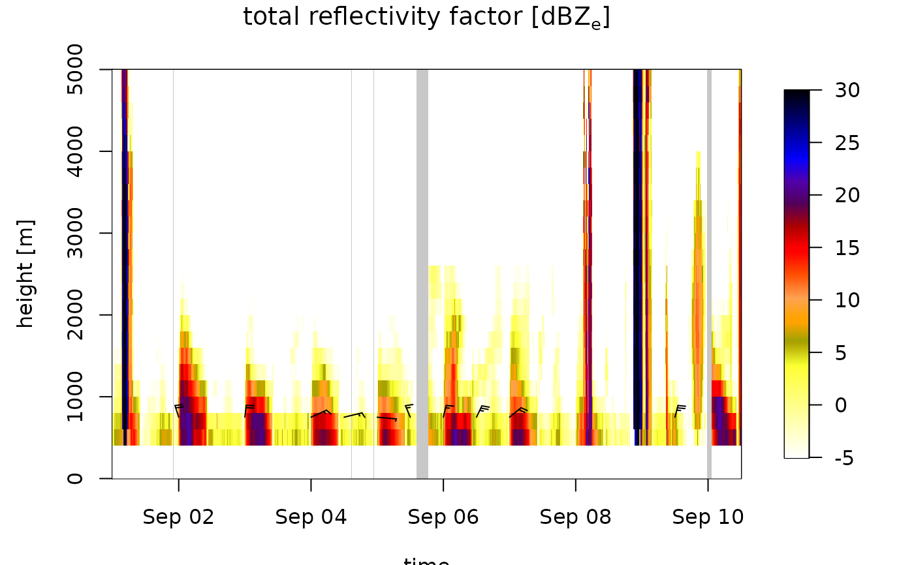
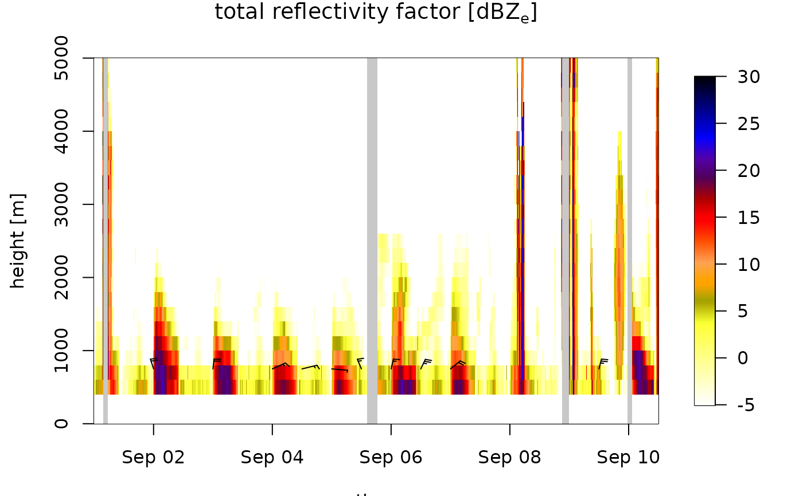
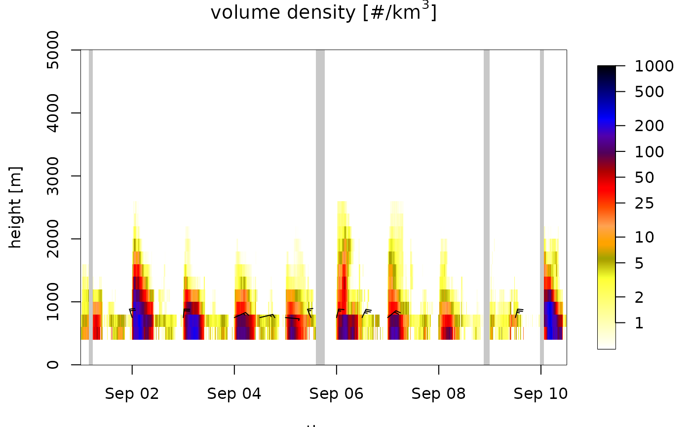
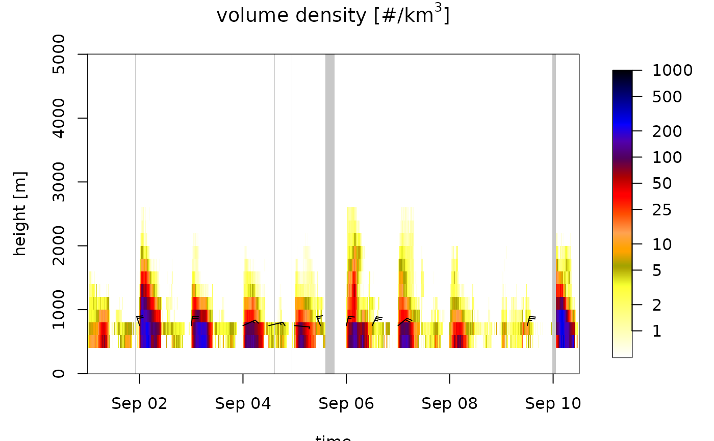

The posthoc precipitation filter assesses how much of the altitude column has a high total reflectivity factor (biology + meteorology) consistent with precipitation, and removes biological signals when there is evidence for the presence of precipitation. Applied to vertical profiles ('vp') or time series of vertical profiles ('vpts').
A vp or vpts object.
The minimum reflectivity factor for precipitation in units dBZ. Defaults to 7 dBZ for C-band radars and 20 dBZ for S-band radars.
The minimum altitude range with total reflectivity factor.
DBZH > dbz at which the filter is triggered in m.
Maximum altitude above ground level to consider in m.
When TRUE the profile is removed from the
A vpts object or a vp object, depending on input x.
During precipitation events usually a high proportion of the altitude
column will show a high total reflectivity DBZH (which includes biology +
meteorology), because precipitation usually falls from several kilometers high
to the ground surface. Precipitation events are often obvious in profile plots
of quantity DBZH as reflectivity signals extending from ground level to high
altitudes far above the typical altitudes where biology is expected. This filter
identifies and removes these cases.
The posthoc precipitation filter examines the total reflectivity factor DBZH
and calculates the altitude range at which DBZH is larger than parameter
dbz. Whenever this altitude range is larger than parameter range (and drop
is FALSE), the biology is removed by setting profile quantities dens and eta
to zero and profile quantity dbz to -Inf. When parameter drop
is TRUE, the profile is removed from the time series altogether.
This posthoc precipitation filter is likely to remove biological scatterers
that co-occur with precipitation, for example biological movements during isolated
convective thunderstorms. It is more aggressive than precipitation filters
applied during vertical profile generation with calculate_vp() that attempt to
remove precipitation and retain biology. The posthoc precipitation filter is especially
useful for analyses where you want to minimize the risk of precipitation contamination,
at the cost of filtering out some biology during precipitation events.
Lowering the default minimum reflectivity (dbz) for precipitation
below 7 dBZ is not recommended, as most precipitation has a reflectivity above 7 dBZ.
Parameter range should be chosen carefully, and should be higher than the
typical altitude where biological scatterers still reach a reflectivity factor equal to dbz.
Note that at S-band wavelengths bird migration occurs much more frequently in the reflectivity
regime for precipitation than at C-band. Therefore, at C-band lower settings for parameter dbz
are appropriate than at S-band.
# rain periods are visible in quantity DBZH as dark vertical lines
# extending above 3 km height:
plot(regularize_vpts(example_vpts), quantity='DBZH')
#> projecting on 300 seconds interval grid...

# Apply posthoc filter to remove profiles during precipitation events:
# (regularization is applied to visualize removed profiles)
my_vpts <- regularize_vpts(filter_precip(example_vpts, drop=TRUE))
#> projecting on 360 seconds interval grid...
# verify that rain events have been removed:
plot(my_vpts, quantity='DBZH')

# the posthoc filter removes some biology during precipitation:
plot(my_vpts, quantity='dens')

# original retains more biology (but at the cost of a higher
# likelihood of occasional precipitation contamination):
plot(regularize_vpts(example_vpts), quantity='dens')
#> projecting on 300 seconds interval grid...

# filter can also be applied to single vp objects:
filter_precip(example_vp)
#> Vertical profile (class vp)
#>
#> radar: seang
#> source: WMO:02606,RAD:SE50,PLC:Ängelholm,NOD:seang,ORG:82,CTY:643,CMT:Swedish radar
#> nominal time: 2015-10-18 18:00:00
#> generated by: vol2bird 0.3.17